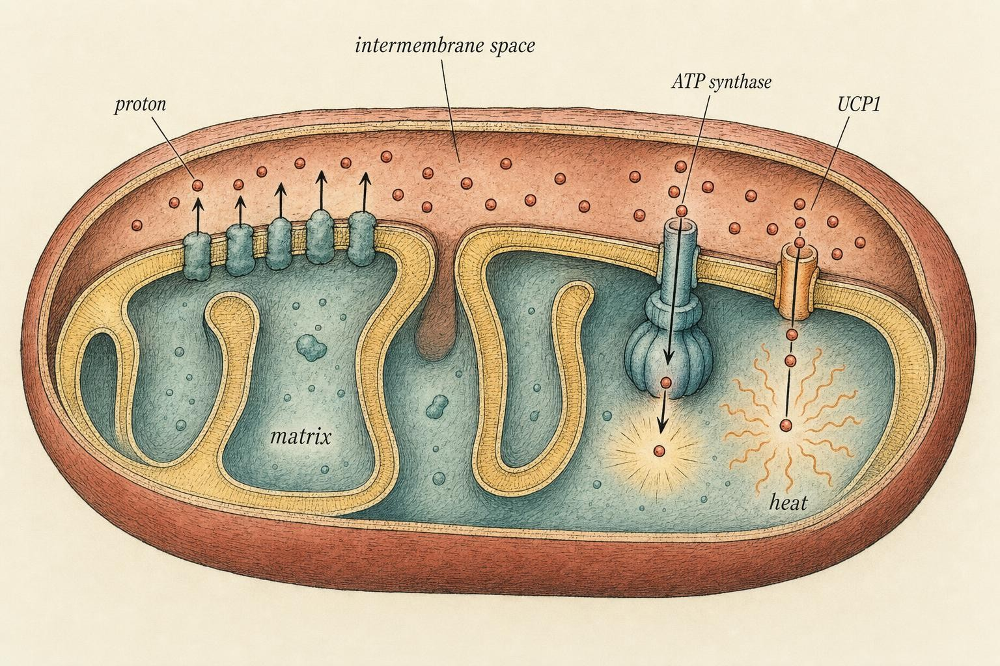
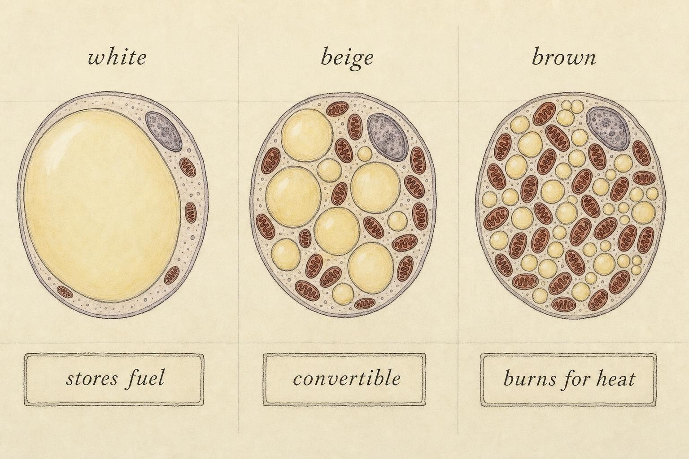

Burning Fuel for Heat: Uncoupling and the Thermogenic Tissues
Releasing a fatty acid is only half the job. Something has to burn it, and one tissue burns it as pure warmth.
Chapter 2 left a fat cell that has done its work. Catecholamines bound their receptors, hormone-sensitive lipase went to work, and a stream of free fatty acids is now moving through the blood. If the story ended there, every hard training block and every cold morning would strip fat off predictably. It does not, and the reason is simple: mobilizing a fatty acid is not the same as disposing of one. A fatty acid released but not oxidized is quietly re-esterified and stored again, often in the very depot it just left. The molecule that leaves the fat cell has to be met, downstream, by a tissue willing to burn it, and by an enzyme system willing to finish the job.
Most tissues burn fuel to make chemical energy. One class of fat tissue burns fuel to make heat, and does so on purpose, by short-circuiting the very machinery every other cell in the body guards carefully. That short circuit is the subject of this chapter. Understanding it will let you grade the two thermogenic tools people hear about most, cold exposure and interval training, with honest numbers instead of hype. It will also close the loop that Chapter 2 opened: the same adrenergic signal that unlocks the fat cell is the signal that lights the furnace, and by the end of this chapter you will be able to trace one hormone cascade through two completely different outcomes in two completely different tissues.
Along the way, expect the biology to complicate a popular story rather than confirm it. Brown fat is real, its mechanism is well characterized, and cold and intense exercise really do engage it. None of that means the tools built around it perform the way the wellness market claims. Holding both facts at once, mechanism is real, magnitude is modest and person-dependent, is the entire discipline this chapter is trying to teach.
The mitochondrion as a battery, refreshed
You have met the mitochondrion before, probably as "the powerhouse of the cell." Refresh the mechanism carefully, because the whole chapter turns on one detail of it. Inside the mitochondrion, a set of protein complexes called the electron transport chain pulls electrons from fuel, whether that fuel started as glucose, fatty acid, or amino acid, and uses the energy released as those electrons move downhill to pump protons (hydrogen ions) across the inner mitochondrial membrane, from the matrix into the narrow intermembrane space. This builds a gradient: more protons on one side of the membrane than the other, like water held behind a dam. That gradient has two components, a difference in proton concentration and a difference in electrical charge, and together physiologists call it the proton-motive force. The British biochemist Peter Mitchell proposed this whole picture, that the cell stores usable energy as a gradient across a membrane rather than in a single chemical bond, as the chemiosmotic theory, and it eventually earned him a Nobel Prize because it turned out to be exactly right.
In a normal cell, the protons are allowed back across the membrane through exactly one gate: an enzyme called ATP synthase. As protons rush through that gate, they spin a rotor built into the enzyme, and the spinning drives the manufacture of adenosine triphosphate (ATP), the chemical energy currency the cell spends on everything from muscle contraction to nerve firing to pumping other ions across other membranes. The system is deliberately tight. Fuel goes in, the gradient builds, protons return only through the ATP gate, and useful chemical energy comes out the other end. Energy capture and fuel oxidation are coupled to each other, which is exactly where the vocabulary of this chapter starts.
Now imagine drilling a second hole in the dam, a channel that lets protons leak back across the membrane without ever passing through the ATP gate. The gradient still gets built. Fuel is still consumed to build it. But the energy stored in that gradient is not captured as ATP. It dissipates directly across the membrane. And when stored energy dissipates without being captured as mechanical or chemical work, the first law of thermodynamics tells you exactly where it has to go: it leaves as heat. That is uncoupling in one sentence. The oxidation of fuel is uncoupled from the synthesis of ATP, and the released energy becomes warmth instead of currency. It is not a malfunction. In one tissue, it is the entire point.

The coupled gate versus the leak: ATP synthase captures the gradient as chemical currency; UCP1 spends it as heat." data-image-idx="0" style="display:block;max-width:100%;max-height:75vh;height:auto;width:auto;margin:0 auto;cursor:pointer;">One more detail matters before moving on, because it prevents a common mix-up later in this chapter. Every mitochondrion, in every tissue, leaks a small amount of proton current even without a dedicated leak channel. Membranes are not perfect insulators, and a modest, unregulated "basal" leak happens everywhere, contributing quietly to resting metabolic rate. What makes the tissue in this chapter special is not that it leaks at all. It is that the leak is large, regulated on purpose, and concentrated through a single dedicated protein built for exactly this job.
Uncoupling protein 1: the molecular short circuit
The second hole in the dam is a real protein, and it has a name worth keeping: uncoupling protein 1 (UCP1), sometimes called thermogenin in older texts. UCP1 is a member of the mitochondrial carrier protein family, built from six transmembrane segments that fold into a channel sitting in the inner mitochondrial membrane. When that channel is open, it provides a regulated path through which protons return to the matrix, bypassing ATP synthase entirely. When it is closed, or when the tissue does not express it at meaningful levels, the mitochondrion behaves like any other, coupling fuel oxidation tightly to ATP output.
UCP1's channel is not simply on or off in the way a light switch is. It is gated by competing molecules inside the cell. Long-chain fatty acids, the same free fatty acids released by the lipolysis cascade in Chapter 2, bind UCP1 and activate the proton leak, which is part of why a tissue rich in UCP1 is also a tissue that consumes fatty acids avidly. Purine nucleotides, chiefly ATP and guanosine diphosphate (GDP), do the opposite: they bind UCP1 from the matrix side and inhibit the leak, keeping the channel closed when the cell's own energy state does not call for heat production. The net proton leak at any moment reflects that tug-of-war between activating fatty acids and inhibiting nucleotides, which means UCP1 is not just a hole in the membrane. It is a regulated valve, responsive to the metabolic state of the cell in real time.
UCP1 is not scattered evenly through the body. It is concentrated almost entirely in a specialized tissue whose job is to make heat: brown adipose tissue. Cannon and Nedergaard, in the review that still anchors the field, put the matter plainly. The physiological function of brown fat is to transfer energy from food into heat, and it does so through UCP1-mediated proton leak under the control of the sympathetic nervous system (Cannon & Nedergaard, 2004). Notice the phrase "under the control." UCP1 does not run constantly. Its abundance in the tissue and its moment-to-moment activity are both set by an external command signal, and that signal is the same one you already studied.
The same cascade, a different ending
Recall the receptor logic from Chapter 2. White fat carries a mix of beta-adrenergic receptors, which stimulate lipolysis, and alpha-2 adrenergic receptors, which restrain it, and the local ratio of the two determines how eagerly a given patch of white fat gives up fuel when norepinephrine arrives. Brown and beige fat run a related but distinct version of that same cascade. Their surfaces are dense with a particular subtype, the beta-3 adrenergic receptor, which is far less prominent on ordinary white fat. When norepinephrine, released from sympathetic nerve endings that richly innervate brown fat, binds that receptor, it triggers the identical second-messenger logic you already learned: a stimulatory G protein activates adenylyl cyclase, which raises cyclic AMP, which activates protein kinase A. In white fat, that kinase phosphorylates hormone-sensitive lipase and releases a fatty acid into the blood. In brown and beige fat, the same kinase does that and more. It also drives the fatty acid straight into local mitochondria for oxidation, and, given sustained signaling, it activates a transcriptional program, centered on a coactivator protein called PGC1-alpha, that increases the manufacture of UCP1 itself and expands the tissue's mitochondrial machinery.
This is the through-line of the whole course, stated as plainly as it can be. One adrenergic drive, arriving as the same catecholamines, produces two cooperating effects in two different tissues: it releases fuel in white fat and it burns fuel in brown and beige fat. Cold, exercise, and fasting all raise sympathetic outflow, and the fat cell's response depends entirely on which receptors and which downstream machinery that particular patch of tissue happens to carry. Chapter 2 gave you the release half of that story. This chapter gives you the burn half.
Notice what UCP1 makes possible once it is expressed and active. Brown fat can pull fatty acids and glucose out of the blood, feed them into mitochondria, and burn them for no purpose other than warmth, generating no ATP surplus and no lactate buildup, simply heat. In a cold room, that capacity is survival. In the context of fat loss, it is a genuine avenue of fuel disposal that exists nowhere else in the body, and it is also a bounded one, for reasons the rest of this chapter will make concrete.
Three tissues, three jobs: white, brown, and beige
Fat is not one tissue. For the purposes of this course it is three, distinguished not by where they sit in the body but by what they do with fuel once it arrives.
White adipose tissue: the storage depot
White adipose tissue (WAT) is the fat everyone pictures. Its cells are dominated by a single large lipid droplet that can occupy nearly the whole cell, they carry relatively few mitochondria, and they express essentially no UCP1. Their job is storage and endocrine signaling, not heat production. When a person loses fat, this is the depot shrinking, cell by cell, as stored triglyceride is broken down and exported faster than it is replaced. White fat is not the enemy and it is not inert. It releases the fatty acids studied in Chapter 2 on hormonal command, and it secretes signaling hormones such as leptin that report the size of the body's fuel reserve to the brain. But on its own, white fat does not burn fuel for warmth. It holds fuel until it is told to release it, and it releases it to be burned somewhere else.
Brown adipose tissue: the furnace
Brown adipose tissue (BAT) is the opposite. Its cells hold many small lipid droplets rather than one large one, and they are packed with mitochondria, and those mitochondria are dense with UCP1. The color is literal and mechanistic at once: the iron bound up in all that mitochondrial machinery, together with a rich blood supply that both delivers fuel and carries heat away to the rest of the body, gives the tissue its characteristic brown appearance under the microscope and even to the naked eye. BAT exists to generate heat on demand, a process called nonshivering thermogenesis because it warms the body without the repetitive muscle contractions of shivering. Human infants carry substantial brown fat around the neck, upper back, and along the spine, which is how they defend body temperature before they are developmentally able to shiver effectively. Brown fat also has a developmental history worth knowing: it arises from a precursor cell lineage more closely related to skeletal muscle than to ordinary white fat cells, which is a clue to why its cells are so densely mitochondrial in the first place. Muscle and brown fat share an ancestor built for producing energy in bulk; one lineage specialized for contraction, the other for heat.
For decades, textbooks taught that adults lost functional brown fat almost entirely after infancy, retaining at most vestigial deposits of no practical relevance. Two papers published in 2009 overturned that assumption within the same year. Using positron emission tomography combined with computed tomography (PET-CT) imaging, which lights up tissue that is actively pulling glucose out of the blood, van Marken Lichtenbelt and colleagues studied 24 healthy men, some lean and some overweight or obese, under both room-temperature and mildly cold conditions. They found active brown fat in 23 of the 24 men during cold exposure but essentially none at room temperature, establishing that the tissue is not merely present but functionally recruitable on demand (van Marken Lichtenbelt et al., 2009). In the same year, Cypess and colleagues screened 3,640 PET-CT scans performed for unrelated clinical reasons across 1,972 patients and confirmed substantial, metabolically active brown fat depots concentrated in the neck and upper chest, more frequently in women, and more frequently in younger and leaner people (Cypess et al., 2009). Adults have a furnace after all. The open questions became how large it typically is, who tends to have more of it, and how much work it can actually do against a full day of energy balance.
Beige adipose tissue: the convertible
The third tissue is arguably the most interesting for anyone thinking about fat loss, because it is not fixed. Beige adipose tissue (also called "brite," for brown-in-white, in some of the older literature) consists of cells that live scattered inside white fat depots and behave like white fat most of the time, holding fuel in a single large droplet and expressing almost no UCP1 at baseline. But under the right stimulus, they convert. Wu and colleagues isolated these cells from mouse and human tissue and demonstrated the defining pattern directly: near-zero UCP1 at rest, indistinguishable from ordinary white fat, but under strong adrenergic signaling they sharply increase UCP1 expression, multiply their mitochondria, and respire like classical brown fat (Wu et al., 2012). The same paper made a point worth sitting with. A meaningful share of what earlier PET-CT studies had been calling "brown fat" in adults is, on closer molecular inspection, actually beige tissue rather than the classical brown fat found in infants. The line between the two categories is softer than the separate names suggest, and in practice the two coexist in the same anatomical depots in adult humans.
This conversion, from a white-fat-like resting state toward a more thermogenic, UCP1-rich state, is called beiging or browning, and it is genuinely inducible rather than fixed at birth. The chief trigger is the same sustained beta-3 adrenergic signaling and cyclic AMP cascade already described, working over days to weeks rather than minutes, through transcriptional regulators including PGC1-alpha and a determination factor called PRDM16 that helps commit precursor cells toward the beige, UCP1-expressing program rather than the ordinary white-fat program. This is precisely why the tools examined in this chapter matter: cold exposure and certain kinds of exercise both push adrenergic and cyclic AMP signaling, and can, over a training or acclimation period measured in weeks, recruit beige character within existing white depots. "Recruit" is the honest verb here, and it is chosen deliberately over more dramatic alternatives. Nobody is installing a new organ. The process coaxes a modest fraction of existing tissue toward a more thermogenic phenotype, a shift in behavior rather than a wholesale transformation of the depot.

Same organ family, three behaviors: storage, convertible, and furnace, distinguished by mitochondrial and UCP1 density." data-image-idx="1" style="display:block;max-width:100%;max-height:75vh;height:auto;width:auto;margin:0 auto;cursor:pointer;">Cold exposure: real mechanism, graded honestly
Cold is the most direct way to switch the furnace on. When skin and core temperature drop, sensory input reaches the hypothalamus, sympathetic nerve traffic to brown and beige fat increases, norepinephrine floods the tissue, beta-3 receptors fire, UCP1 opens, and the mitochondria burn fatty acids and glucose for heat instead of ATP. This is not speculative physiology built on animal work alone. Chondronikola and colleagues took muscle and fat biopsies from cold-exposed adults with confirmed active brown fat and measured the tissue directly, finding increased uncoupled respiration and thermogenic gene expression in the brown fat itself, alongside measurable improvements in whole-body glucose handling and insulin sensitivity in the participants who had enough active tissue to matter (Chondronikola et al., 2014). The mechanism is real, and it is measurable in living human tissue, not just inferred from a thermal image.
Now the honest part: how large is the effect in absolute terms? In cold-activated adults, brown and beige fat thermogenesis typically adds on the order of tens to perhaps a couple hundred kilocalories per day, and the higher figures in that range come specifically from lean, brown-fat-rich individuals exposed to a meaningful cold stimulus for a sustained period, not from a two-minute cold shower. Set against a total daily energy expenditure in the range of 2,000 to 3,000 kilocalories for most adults, a realistic added contribution of roughly 50 to 150 kilocalories on a favorable day is genuine and, at the same time, modest. It behaves like a rounding adjustment on the day's energy ledger. It is not a lever that moves the ledger by itself.
Two further cautions keep this claim grounded rather than either dismissive or overstated. First, cold exposure reliably triggers compensatory appetite and behavioral warming responses. The body actively defends its energy balance across multiple systems at once, and some of the extra heat generated by brown fat activation is offset by eating a bit more afterward or by seeking warmth and comfort sooner than a spreadsheet would predict. Second, the acute physical discomfort of deliberate cold exposure carries real costs in adherence, sleep, and next-day training quality that a kilocalorie estimate does not capture at all. Respect the mechanism. Keep the magnitude in proportion. Both statements are true simultaneously, and losing sight of either one produces bad advice.
The population split that cannot be ignored
Here is where population fit returns with real force, exactly as the earlier chapters of this course promised it would. The people with the most active brown fat are, on average, the leaner and younger ones, and the data on this point is unusually consistent across independent studies. Van Marken Lichtenbelt found brown fat activity significantly lower in the overweight and obese men in the study compared with the lean men, and found brown fat activity positively correlated with resting metabolic rate (van Marken Lichtenbelt et al., 2009). Cypess found the same inverse relationship in the much larger PET-CT dataset: the probability of detecting active brown fat was inversely correlated with age, and among older patients specifically, inversely correlated with body mass index as well (Cypess et al., 2009). Put those two findings together and the uncomfortable implication is straightforward. Cold exposure, evaluated purely as a fat-burning tool, tends to pay the most to the person who arguably needs it least, and the least to the person who most wants a shortcut through a difficult final stretch.
This finding is not a reason to dismiss cold exposure outright, and it should not be read that way. It is a reason to place the tool accurately rather than marketing it as a universal solution. For a lean, already fit, thermogenically active person chasing a small final edge, cold exposure is a plausible marginal tool worth considering on its own modest terms. For a person carrying more body fat who is early in a fat-loss process, the same cold plunge offers less thermogenic payoff, worse comfort, and a genuine risk of crowding out the interventions that actually move the needle for that person, namely a sustained energy deficit, consistent resistance and cardiovascular training, and the unglamorous discipline of adherence over months. The underlying mechanism is universal biology. The practical return on investing time and discomfort in it is not universal at all.
Interval training and the exercise route to beiging
Exercise reaches the thermogenic tissues through a different door than cold does, though it converges on some of the same downstream machinery. Contracting skeletal muscle releases a family of signaling molecules called myokines directly into the bloodstream, and one of them, a molecule called irisin, was proposed as a direct bridge between working muscle and beiging fat. Boström and colleagues identified irisin as a myokine produced downstream of PGC1-alpha, the same exercise-sensitive coactivator introduced earlier in this chapter as a driver of UCP1 expression, and showed that irisin promoted UCP1 expression and browning of subcutaneous white fat when administered to mice (Boström et al., 2012). The appeal of this finding was, and still is, obvious. A molecule secreted by exercising muscle that directly instructs fat tissue to become more thermogenic would tie training to heat production in one clean mechanistic line, and it looks forward to Chapter 4, where exercise modality gets its own full treatment.
Then comes a sharp reality check, and this chapter would be doing a disservice to skip it. The irisin story is considerably cleaner in mice than it has proven to be in humans, and human beiging in response to exercise has been inconsistent across studies. Vidal and Stanford reviewed the accumulated human and animal evidence and found a clear split: rodent studies reliably show white fat beiging in response to exercise training, while in humans, endurance-style training does not dependably raise UCP1 or other thermogenic gene markers in subcutaneous white fat. Notably, though, they report that six weeks of high-intensity interval training (HIIT), defined as short, repeated bouts near or above maximal effort separated by brief recovery, did increase mitochondrial respiration measured directly in subcutaneous white fat, a more encouraging signal for intense intervals specifically than the review found for steady endurance work (Vidal & Stanford, 2020). Intensity, not merely duration or total volume, appears to be the more reliable lever on the human side of this evidence base.
So the honest framing for interval training as a thermogenic tool is layered, and each layer needs to be kept separate from the others. High-intensity intervals plausibly nudge human white fat toward a somewhat more thermogenic phenotype, and they reliably carry the well-established downstream benefits of vigorous training on cardiorespiratory fitness, mitochondrial capacity, and glucose handling, benefits that do not depend on beiging at all and would justify the training on their own. But the added daily energy expenditure attributable to beiging itself is small and, given the human data above, uncertain. And the popular claim about the post-exercise "afterburn," formally the excess post-exercise oxygen consumption (EPOC), deserves the same scrutiny applied to cold exposure. According to PubMed, LaForgia, Withers, and Gore (2006) reviewed decades of EPOC research and concluded that even under exercise conditions specifically designed to produce a large and prolonged EPOC, sessions well beyond what most people sustain in a typical program, the EPOC contributed only about 6 to 15 percent of the net oxygen cost of the exercise itself, and they concluded plainly that earlier optimism about EPOC as a meaningful driver of weight loss was generally unfounded (LaForgia et al., 2006). For a typical HIIT session, that translates to an afterburn on the order of tens of kilocalories, not the outsized figures that marketing copy for interval programs often implies. Interval training earns its place in a program primarily through fitness, fuel-partitioning, and time efficiency. Beiging and afterburn are a genuine bonus on top of that case, not the reason to choose it.
The physiological function of brown adipose tissue is to transfer energy from food into heat. Its activation is under the control of norepinephrine released from sympathetic nerves.
After Cannon & Nedergaard, 2004
Putting it into decisions
Step back from the biology and turn it into a decision frame that travels well beyond this one chapter. Every thermogenic tool has three things worth weighing, in this order: whether the mechanism is real, how large the effect actually is in absolute terms, and who is doing it. Cold exposure and interval training both pass the first test cleanly; the mechanisms described in this chapter are not in serious scientific dispute. They both come out modest on the second test. And they both split hard on the third, which is exactly where most of the popular advice about them goes wrong.
Case: Naomi and the cold-plunge routine
Run Naomi's situation through the framework this chapter just built, and the confusion mostly resolves. Start with the mechanism. Cold plunges do activate brown and beige fat through the sympathetic pathway described above, and that part of the video was not wrong. Where it went wrong was magnitude and population fit. Naomi is already a lean, fit, recreational runner, which places her closer to the population in whom brown fat tends to be more active, so the tool is not irrational for her specifically. But even in a favorable case, the evidence reviewed in this chapter points to an added contribution measured in tens to roughly a hundred-plus kilocalories on a good day, not a routine capable of producing dramatic, fast visible change on its own. Her slowing progress after months of a genuine deficit is far better explained by the same defended-setpoint pressure this course has already introduced than by an underused furnace.
The rising appetite on plunge days is not a mystery either, once you know to look for it. Cold exposure reliably triggers compensatory eating and comfort-seeking behavior as part of the body's broader defense of energy balance, and Naomi's experience is a textbook example of that defense working exactly as the mechanism predicts, not a sign that something is malfunctioning. None of this means Naomi should abandon cold plunges if she enjoys them or finds them useful for other reasons such as mood or recovery. It means she should stop expecting them to explain a plateau that has a far more boring and far more powerful cause: total energy balance, sustained over months, interacting with a body that is actively resisting further loss. The plunge is a rounding adjustment sitting on top of that larger story, not a replacement for it.
Interval training resolves somewhat more easily than cold exposure, because its main case for inclusion in a program does not depend on beiging at all. Recommend it for the fitness, glucose handling, mitochondrial adaptation, and time efficiency it reliably delivers, benefits that apply broadly across body-fat levels and training histories, and treat any thermogenic browning or afterburn as a small extra rather than the justification for choosing it over other training options. That framing keeps the advice honest and keeps expectations calibrated to what the mechanism can actually deliver.
One clinical boundary belongs here explicitly, before this chapter closes. Chest discomfort, extreme cold intolerance, fainting, dizziness that does not resolve quickly, or any symptom that genuinely alarms a person during cold exposure or intense interval training is a signal to stop the activity and seek professional evaluation, not something to push through, minimize, or self-diagnose using the framework in this chapter. Advanced thermogenic tools are appropriate for people whose fundamentals and underlying health status support them, and knowing when a physical response has crossed from expected discomfort into a genuine warning sign is itself part of using these tools responsibly.
Key Takeaways
- Mobilizing a fatty acid is not the same as burning one. Uncoupling is the mechanism by which the body actually disposes of fuel as heat instead of storing the energy as ATP, and it happens on purpose in one specialized tissue.
- UCP1 is the molecular short circuit: a regulated channel that lets protons leak back across the inner mitochondrial membrane without passing through ATP synthase, activated by fatty acids and inhibited by purine nucleotides, dissipating the proton gradient as warmth.
- White fat stores fuel and carries almost no UCP1; brown fat is a dedicated furnace, developmentally related to muscle, dense with mitochondria and UCP1; beige fat lives inside white depots and can convert toward a thermogenic phenotype under sustained beta-3 adrenergic and cyclic AMP signaling.
- The same adrenergic cascade from Chapter 2, catecholamine, receptor, cyclic AMP, protein kinase A, produces two different outcomes depending on the tissue: fuel release in white fat, fuel combustion for heat in brown and beige fat.
- Cold exposure genuinely activates brown and beige fat, but the added energy is modest, roughly 50 to 150 kilocalories per day in favorable cases, and it pays most to leaner, younger, brown-fat-rich people, the population that typically needs it least.
- Interval training plausibly beiges human white fat under high intensity specifically, and it carries strong, well-established fitness benefits on its own. The thermogenic and afterburn contributions are small, on the order of tens of kilocalories, so recommend intervals for the training adaptations first.
- Grade every thermogenic tool on three axes in order: is the mechanism real, how large is the effect in absolute terms, and who is doing it. The right answer is almost always population-dependent rather than universal.
- Chest pain, fainting, extreme cold intolerance, or other alarming symptoms during cold or intense training warrant professional evaluation, never self-diagnosis through this or any educational framework.
The same adrenergic drive that mobilizes fat and lights the furnace also runs through exercise itself, in far more forms than the intervals highlighted in this chapter. Chapter 4 takes the exercise question head on, comparing modalities, sprinting, steady cardio, and resistance training, not by their marketing but by what they actually do to fuel selection, total energy expenditure, and the physiology assembled across the first three chapters of this course.
References
Boström, P., Wu, J., Jedrychowski, M. P., Korde, A., Ye, L., Lo, J. C., Rasbach, K. A., Boström, E. A., Choi, J. H., Long, J. Z., Kajimura, S., Zingaretti, M. C., Vind, B. F., Tu, H., Cinti, S., Højlund, K., Gygi, S. P., & Spiegelman, B. M. (2012). A PGC1-alpha-dependent myokine that drives brown-fat-like development of white fat and thermogenesis. Nature, 481(7382), 463 to 468. https://doi.org/10.1038/nature10777
Cannon, B., & Nedergaard, J. (2004). Brown adipose tissue: Function and physiological significance. Physiological Reviews, 84(1), 277 to 359. https://doi.org/10.1152/physrev.00015.2003
Chondronikola, M., Volpi, E., Børsheim, E., Porter, C., Annamalai, P., Enerbäck, S., Lidell, M. E., Saraf, M. K., Labbe, S. M., Hurren, N. M., Yfanti, C., Chao, T., Andersen, C. R., Cesani, F., Hawkins, H., & Sidossis, L. S. (2014). Brown adipose tissue improves whole-body glucose homeostasis and insulin sensitivity in humans. Diabetes, 63(12), 4089 to 4099. https://doi.org/10.2337/db14-0746
Cypess, A. M., Lehman, S., Williams, G., Tal, I., Rodman, D., Goldfine, A. B., Kuo, F. C., Palmer, E. L., Tseng, Y. H., Doria, A., Kolodny, G. M., & Kahn, C. R. (2009). Identification and importance of brown adipose tissue in adult humans. New England Journal of Medicine, 360(15), 1509 to 1517. https://doi.org/10.1056/NEJMoa0810780
LaForgia, J., Withers, R. T., & Gore, C. J. (2006). Effects of exercise intensity and duration on the excess post-exercise oxygen consumption. Journal of Sports Sciences, 24(12), 1247 to 1264. https://doi.org/10.1080/02640410600552064
van Marken Lichtenbelt, W. D., Vanhommerig, J. W., Smulders, N. M., Drossaerts, J. M. A. F. L., Kemerink, G. J., Bouvy, N. D., Schrauwen, P., & Teule, G. J. J. (2009). Cold-activated brown adipose tissue in healthy men. New England Journal of Medicine, 360(15), 1500 to 1508. https://doi.org/10.1056/NEJMoa0808718
Vidal, P., & Stanford, K. I. (2020). Exercise-induced adaptations to adipose tissue thermogenesis. Frontiers in Endocrinology, 11, 270. https://doi.org/10.3389/fendo.2020.00270
Wu, J., Boström, P., Sparks, L. M., Ye, L., Choi, J. H., Giang, A. H., Khandekar, M., Virtanen, K. A., Nuutila, P., Schaart, G., Huang, K., Tu, H., van Marken Lichtenbelt, W. D., Hoeks, J., Enerbäck, S., Schrauwen, P., & Spiegelman, B. M. (2012). Beige adipocytes are a distinct type of thermogenic fat cell in mouse and human. Cell, 150(2), 366 to 376. https://doi.org/10.1016/j.cell.2012.05.016